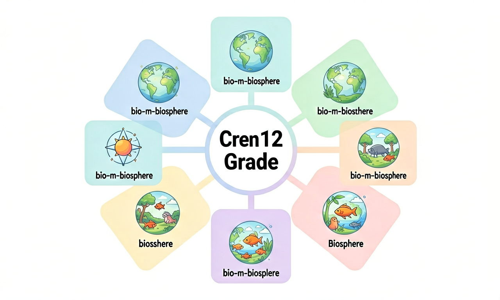

正在打开课件，请稍候…
正在打开课件，请稍候…

生物圈是指地球上所有生物及其生存环境的总和，包括大气圈、水圈和岩石圈的交界处。它是地球上生命活动的空间，涵盖了从深海到高山的广阔区域。生物圈的核心特征是生物与环境之间的相互作用，例如，植物通过光合作用吸收二氧化碳并释放氧气，维持了大气中的气体平衡。生活中，我们可以看到生物圈的体现，比如森林生态系统中的树木、动物和微生物共同构成了一个复杂的生物网络。生物圈的概念帮助我们理解地球生命系统的整体性和复杂性，是生态学研究的基础。
生物圈的结构可以分为垂直结构和水平结构。垂直结构包括大气层、水层和岩石层，其中大气层为生物提供氧气和二氧化碳，水层是水生生物的生存环境，岩石层则为陆地生物提供栖息地。水平结构则是指生物在地球表面的分布，例如热带雨林、草原、沙漠和海洋等生态系统。每个生态系统都有其独特的生物群落和环境特征。例如，热带雨林生态系统以丰富的生物多样性著称，而沙漠生态系统则以耐旱植物和动物为主。了解生物圈的结构有助于我们更好地理解生物与环境的相互关系。
生物圈的功能主要体现在物质循环和能量流动两个方面。物质循环包括碳循环、氮循环和水循环等，这些循环过程确保了地球上生命的持续存在。例如，碳循环通过光合作用和呼吸作用将二氧化碳转化为有机物，并释放氧气。能量流动则是指太阳能通过食物链在不同生物之间传递。例如，植物通过光合作用将太阳能转化为化学能，食草动物通过食用植物获取能量，食肉动物则通过捕食食草动物获取能量。生物圈的功能维持了地球生态系统的稳定和平衡。
人类活动对生物圈的影响日益显著，包括森林砍伐、污染和气候变化等。森林砍伐导致生物栖息地丧失，破坏了生态平衡。例如，亚马逊雨林的砍伐不仅减少了生物多样性，还加剧了全球气候变化。污染则直接影响生物的健康和生存，例如，塑料污染对海洋生物的威胁。气候变化则通过改变温度和降水模式影响生物的分布和繁殖。为了保护生物圈，我们需要采取可持续发展的措施，例如减少碳排放、保护生物栖息地和推广可再生能源。
生物多样性是指地球上生物种类的多样性，包括物种多样性、遗传多样性和生态系统多样性。物种多样性是指不同物种的数量和种类，例如热带雨林中的动植物种类繁多。遗传多样性是指同一物种内不同个体的遗传差异，例如人类的不同血型。生态系统多样性是指不同生态系统的类型和分布，例如森林、草原和湿地等。生物多样性对维持生态系统的稳定性和功能至关重要，例如，多样化的植物种类可以防止土壤侵蚀，多样化的动物种类可以控制害虫数量。
生态平衡是指生态系统中生物与环境之间的动态平衡状态。生态平衡的维持依赖于生物之间的相互作用和物质循环的稳定。例如，捕食者和猎物之间的数量关系保持了生态系统的稳定，如果捕食者数量过多，猎物数量会减少，最终导致捕食者数量下降。物质循环的稳定则确保了生态系统中资源的持续供应。例如，水循环确保了水资源的再生，碳循环确保了大气中二氧化碳和氧气的平衡。生态平衡的破坏会导致生态系统的崩溃，例如过度捕捞导致海洋生态系统的失衡。
可持续发展是指在满足当代人需求的同时，不损害后代人满足其需求的能力。在生物圈中，可持续发展意味着合理利用自然资源，保护生态环境，维持生态平衡。例如，推广可再生能源可以减少对化石燃料的依赖，保护森林生态系统可以维持生物多样性。可持续发展的实践包括生态农业、绿色建筑和循环经济等。例如，生态农业通过种植多种作物和减少化学肥料的使用保护土壤健康，绿色建筑通过节能设计和环保材料减少能源消耗和环境污染。
保护生物圈需要采取多种措施，包括立法保护、公众教育和国际合作等。立法保护通过制定环境保护法律和法规，限制破坏生态环境的行为，例如禁止非法砍伐和污染排放。公众教育通过提高公众的环保意识，鼓励人们采取环保行动，例如减少塑料使用和参与植树活动。国际合作通过全球环境治理，共同应对跨国环境问题，例如气候变化和生物多样性保护。例如，《巴黎协定》通过全球合作减少温室气体排放，保护地球气候系统。保护生物圈是每个人的责任，我们需要共同努力，确保地球生态系统的健康和可持续。
生物圈中的能量流动遵循食物链和食物网的规律。能量从阳光开始，通过生产者（如绿色植物）的光合作用转化为化学能，然后传递给各级消费者。例如，草原生态系统中，草通过光合作用固定太阳能，羚羊吃草获取能量，狮子捕食羚羊。但能量在传递过程中会大量损失，通常只有10%的能量能传递到下一营养级。生活中，我们吃的米饭来自水稻的光合作用，而鸡蛋则来自鸡对植物能量的转化。理解能量流动有助于我们认识生态平衡的重要性。
人类活动正在深刻改变着生物圈。正面影响包括建立自然保护区保护濒危物种，如中国的大熊猫保护工程；发展生态农业减少农药使用。负面影响更为显著：工业排放导致温室效应加剧，如北极冰川融化威胁北极熊生存；过度砍伐造成亚马逊雨林面积锐减，影响全球碳氧平衡；塑料污染导致海洋生物误食死亡，如海龟误食塑料袋的案例。日常生活中，我们可以通过垃圾分类、节约用水用电等方式减少对生物圈的负面影响。理解这些影响是保护地球家园的第一步。
1. 什么是生物圈？ 2. 生物圈的主要功能是什么？ 3. 人类活动如何影响生物圈？
1. 描述生物圈的结构。 2. 解释生物多样性的重要性。 3. 举例说明可持续发展的实践。
错因：学生可能认为生物圈仅限于陆地生态系统。误区：忽略了水圈和大气圈的重要性。诊断：通过讲解生物圈的垂直结构和水平结构，帮助学生全面理解生物圈的范围和组成。
迁移挑战：设计一个可持续发展的社区项目，分析其对生物圈的影响。例如，设计一个社区花园，解释其如何促进生物多样性和生态平衡。